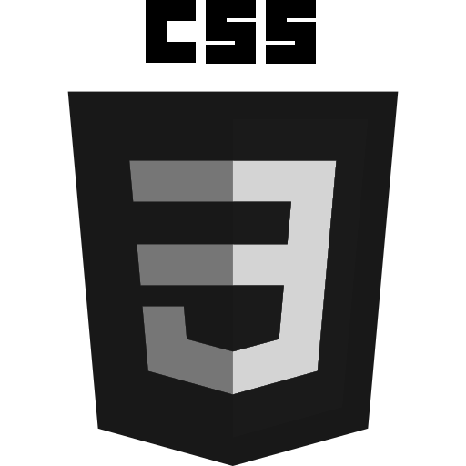
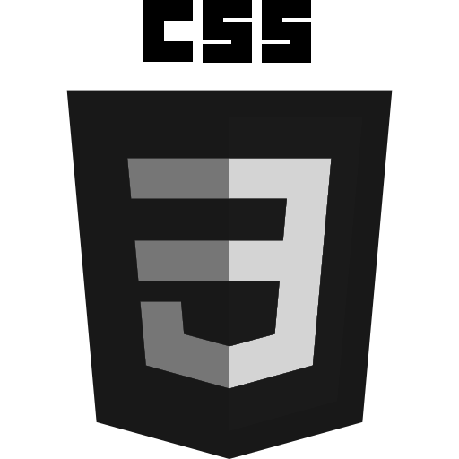

Portfolio développeur
Je me presente, je m'appelle Théo Courson, j'ai 20 ans et je suis actuellement en 2ème
année à l'école ITIC Paris. Je prépare un BTS SIO (Services Informatiques aux Organisations)
En pleine montée dans le monde du développement informatique :)
Bonne découverte du portfolio !
Expériences professionnelles :
Du 13/01/2020 au 07/02/2020 (Paris-France)
MEDIA ALARME
Assistant technicien
Tâches réalisées :
Installation de différents systèmes de sécurités
comme le détecteur d’intrusion, caméras,
digicodes. Paramétrage de réseaux dans les
entreprises clientes.
Du 16/05/2021 au 24/06/2021 (Paris-France)
ITG Groupe
Développement web
Tâches réalisées :
Analyse des différents sites web du groupe afin
de trouver des corrections. J’accompagnais un
développeur web. Utilisation de Word Press pour l'ajout de contenu sur différentes pages.
Compétences
Partir d'une idée
La schématiser
Mettre en place toute la réalisation
Langages
 


JAVA
UBUNTU
Un savoir faire

Sites responsives
Créativité